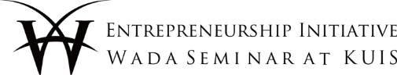

すべては
「くいすぐっず」から始まった
神田外語大学の英語名はKanda University of International Studies その頭文字KUISを冠して開発したオリジナル大学グッズが「くいすぐっず」である。「社会の役に立ち、大学を活性化させたい」という想いと、「自らデザインしたグッズを欲しい」という想いが重なって、「和田ゼミ起業研究会」が生み出したブランドである。

デザインスキルはもとより、企画、制作、宣伝、販売などのノウハウもないままに、まったくの手探りからの出発となった。資金もすべて自己資金。だが徐々に、大学側からの施設・機材の応援や学生サークルや個人からの協力も得て、、ついに「くいすぐっず」がデビューする。舞台は秋の学園祭「浜風祭」
「和田ゼミ起業研究会」の最初の半歩はこうして踏み出され、ここからすべてが始まった。
(2003年当時の和田ゼミ起業研究会ホームページはこちら)
(2003年当時のホームページ・浜風祭商品カタログ一覧はこちら)
日本の「和」
人々との「輪」

「くいすぐっず」というひらがなのブランド名には、外国語大学のなかにあっても日本の「和」を忘れずに大切にしていこうという願いがこめられていた。そして、人々との連携を「輪」で象徴し、「円」のなかにひらがなの「くいす」を収めたデザインがロゴとなった。
このブランドに込められた想いは、学内への「くいすぐっず」の定着だけでなく、地域との協働へもつながっていく。卒業・入学祝いの「紅白饅頭」、ロゴ入りの「メロンパン」、地産地消を進める「千葉丼」など、つぎつぎと地域コミュニティとの提携がひろがった。


「和田ゼミ社会起業研究会」
への進化
やがて「くいすぐっず」はヨチヨチと歩み始める。しかし、道は平坦ではなかった。学内コミュニティの一体感を強め、身近に楽しんでもらえるように、「くいすぐっず」の販価を常に抑えてきたため、時には赤字に陥って自腹を切ることも起こった。そして、収益が出たとしてもわずかなものである。
だが、めげなかった。「くいすぐっず」をリソースとし、その収益を社会に還元することでチェンジメーカーとなるビジネスモデルを築きたかったからである。
その流れのなかで、に「和田ゼミ社会起業研究会」が誕生する。収益を分配せず、再投資して社会へ還元するSocial Business の性格をいっそう強めることにしたのである。求めていたのは利益ではなく、人々との連携の「輪」であり、より笑顔のあふれる社会、より平和裏に共存できる世界であったからだ。
行動は Professional and Social
心は Sharing and Contribution

立ち上がって手をつなぐことから始まった「おぼつかない歩み」は、こうして少しずつ前進することになった。
そして、やがてStep2の挑戦期がやってくる。